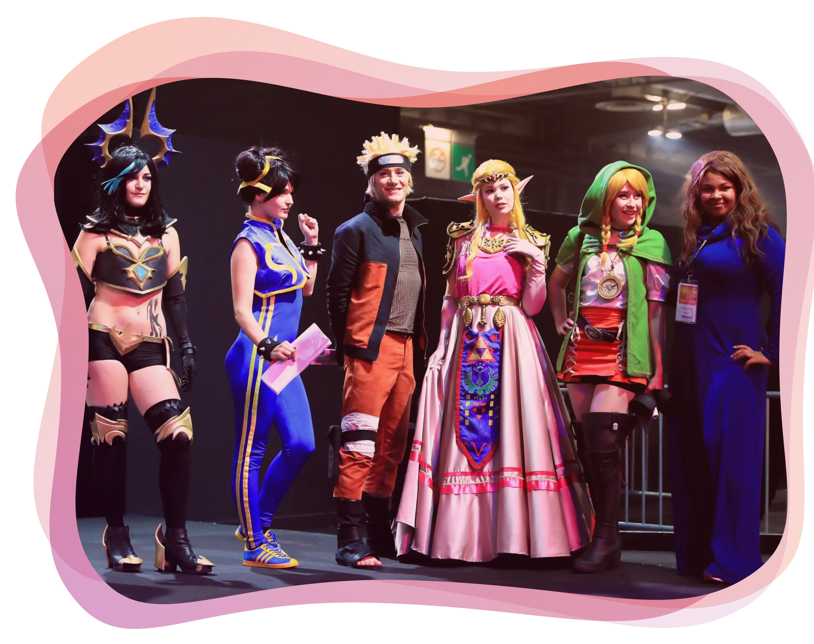

Un concours cosplay de sélections pour la Coupe de France !
Mise en scène, musique, show, confection de costumes, jury prestigieux, tout sera mis en place pour célébrer la pratique du Cosplay. Vous pouvez participer aux sélections de votre région et remporter ainsi votre billet pour la finale Nationale (dates et lieux à venir).
À destination aussi bien des enfants que des parents, des joueurs que des passionnés de Mangas ou Comics. Le Soissons Cosplay Contest sera à vivre sur scène ou parmi les spectateurs.
Prochainement les règlements et inscriptions pour le Soissons Cosplay Contest.